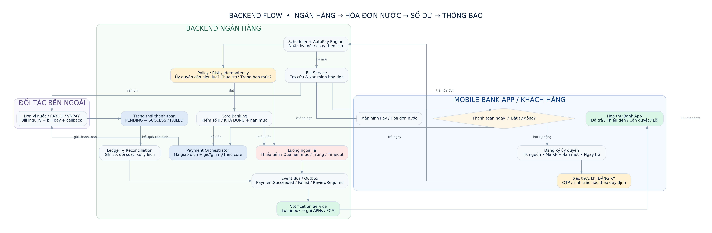
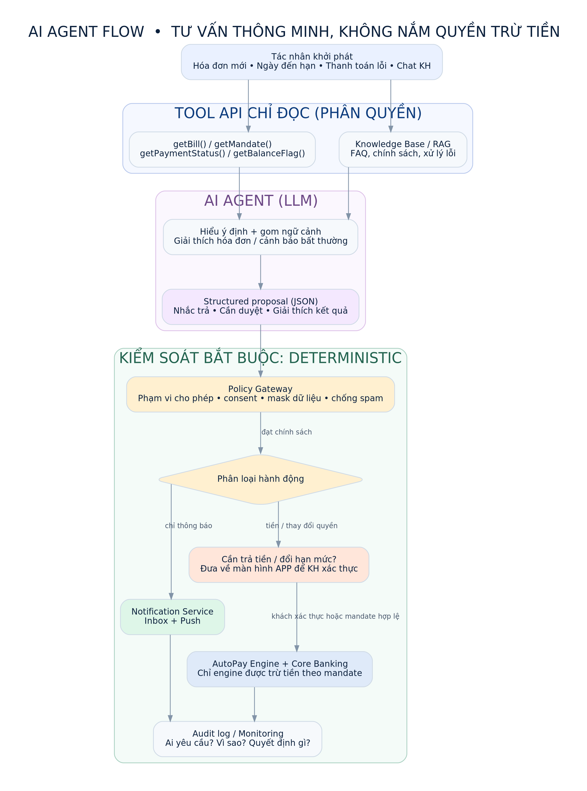

01. Bản chất từng loại giao tiếp
Mobile App ↔ Backend
Ví dụ POST /v1/payments, GET /v1/accounts/{id}/balance. App gửi HTTP request, backend trả JSON response. Tên “REST-style” không khẳng định toàn bộ API tuân thủ REST nghiêm ngặt.
Backend ↔ Backend
Ví dụ POST /internal/autopay/execute-due. Đây là lệnh nội bộ sử dụng HTTP, một số endpoint thiên về dạng RPC-style command hơn là tài nguyên REST thuần.
Đối tác → Ngân hàng
Ví dụ POST /webhooks/billers/bill-issued. Nhà cung cấp nước chủ động gọi callback HTTP khi có hóa đơn mới. Yêu cầu xác minh chữ ký, chống replay và xử lý lặp.
Microservice ↔ Microservice
Ví dụ AccountService.GetAvailableBalance(). Gọi hàm từ xa qua HTTP/2, thường đóng gói Protobuf. Có thể dùng thay thế hoặc bổ sung một số Internal HTTP API, không suy ra gRPC chỉ từ đường dẫn HTTP.
Backend ↔ App đang mở
Ví dụ wss://bank.example/v1/realtime, message payment.status.updated. Hai chiều, giữ kết nối để màn hình nhận trạng thái nhanh. Với app đóng, vẫn dùng push notification.
Event giữa các service
Ví dụ topic payment.completed. Event được phát lên message broker; Notification, Audit, Reconciliation cùng tiêu thụ. Kafka topic không phải REST endpoint hay WebSocket.
02. Đường đi của một thanh toán tiền nước
Một giao dịch đi qua nhiều loại giao tiếp; một màn hình không tương đương một API.
Tự động hằng tháng: Scheduler/Event hóa đơn → AutoPay Engine → kiểm tra mandate (ủy quyền), hạn mức, số dư, chống trùng → Payment Service → Core Banking và nhà cung cấp nước → cập nhật trạng thái → thông báo.
AI Agent: chỉ đọc dữ liệu được cấp quyền, phân tích hóa đơn bất thường, đề xuất nhắc khách. Không giữ OTP và không tự gọi lệnh ghi nợ.
03. Danh sách đầy đủ 45 API — lọc theo loại
Giữ nguyên method, endpoint và ý nghĩa trong tài liệu gốc. Mọi đường dẫn đều là mẫu giả định.
| # | Method | Endpoint | Phân loại | Mục đích | Nhóm nghiệp vụ |
|---|---|---|---|---|---|
| 01 | POST | /v1/auth/login | REST-style HTTP | Đăng nhập | Xác thực / phiên đăng nhập |
| 02 | POST | /v1/auth/refresh | REST-style HTTP | Làm mới access token | Xác thực / phiên đăng nhập |
| 03 | POST | /v1/auth/challenges | REST-style HTTP | Khởi tạo thử thách OTP/step-up | Xác thực / phiên đăng nhập |
| 04 | POST | /v1/auth/challenges/{id}/verify | REST-style HTTP | Xác minh thử thách để duyệt giao dịch/mandate | Xác thực / phiên đăng nhập |
| 05 | POST | /v1/auth/logout | REST-style HTTP | Đăng xuất | Xác thực / phiên đăng nhập |
| 06 | GET | /v1/accounts | REST-style HTTP | Danh sách tài khoản thanh toán | Tài khoản / số dư |
| 07 | GET | /v1/accounts/{id} | REST-style HTTP | Chi tiết tài khoản | Tài khoản / số dư |
| 08 | GET | /v1/accounts/{id}/balance | REST-style HTTP | Số dư khả dụng / số dư sổ | Tài khoản / số dư |
| 09 | GET | /v1/accounts/{id}/transactions | REST-style HTTP | Biến động / lịch sử giao dịch | Tài khoản / số dư |
| 10 | GET | /v1/accounts/{id}/limits | REST-style HTTP | Hạn mức còn lại | Tài khoản / số dư |
| 11 | GET | /v1/billers | REST-style HTTP | Danh sách đơn vị điện nước | Nhà cung cấp và hóa đơn |
| 12 | GET | /v1/billers/{id}/services | REST-style HTTP | Dịch vụ thuộc nhà cung cấp | Nhà cung cấp và hóa đơn |
| 13 | POST | /v1/bills/inquiries | REST-style HTTP | Tra cứu hóa đơn bằng mã khách hàng | Nhà cung cấp và hóa đơn |
| 14 | POST | /v1/bills/validate | REST-style HTTP | Xác minh hóa đơn chưa thanh toán / số tiền | Nhà cung cấp và hóa đơn |
| 15 | POST | /v1/bill-links | REST-style HTTP | Lưu mã khách hàng tiền nước | Nhà cung cấp và hóa đơn |
| 16 | GET | /v1/bill-links | REST-style HTTP | Mã khách hàng đã liên kết | Nhà cung cấp và hóa đơn |
| 17 | DELETE | /v1/bill-links/{id} | REST-style HTTP | Gỡ mã khách hàng | Nhà cung cấp và hóa đơn |
| 18 | POST | /v1/payments/quotes | REST-style HTTP | Ước tính phí và số tiền tổng | Thanh toán thủ công |
| 19 | POST | /v1/payments | REST-style HTTP | Khởi tạo giao dịch có idempotency key | Thanh toán thủ công |
| 20 | POST | /v1/payments/{id}/confirm | REST-style HTTP | Duyệt sau xác thực theo quy tắc | Thanh toán thủ công |
| 21 | GET | /v1/payments/{id} | REST-style HTTP | Trạng thái giao dịch | Thanh toán thủ công |
| 22 | GET | /v1/payments | REST-style HTTP | Danh sách giao dịch | Thanh toán thủ công |
| 23 | GET | /v1/payments/{id}/receipt | REST-style HTTP | Biên nhận xác nhận thành công | Thanh toán thủ công |
| 24 | POST | /v1/payments/{id}/cancel | REST-style HTTP | Hủy khi còn được phép | Thanh toán thủ công |
| 25 | POST | /v1/payments/{id}/disputes | REST-style HTTP | Yêu cầu tra soát / khiếu nại | Thanh toán thủ công |
| 26 | POST | /v1/autopay/mandates | REST-style HTTP | Tạo ủy quyền có giới hạn và bằng chứng xác thực | AutoPay / ủy quyền định kỳ |
| 27 | GET | /v1/autopay/mandates | REST-style HTTP | Liệt kê ủy quyền | AutoPay / ủy quyền định kỳ |
| 28 | GET | /v1/autopay/mandates/{id} | REST-style HTTP | Chi tiết ủy quyền | AutoPay / ủy quyền định kỳ |
| 29 | PATCH | /v1/autopay/mandates/{id} | REST-style HTTP | Đổi cấu hình; xác thực lại khi cần | AutoPay / ủy quyền định kỳ |
| 30 | POST | /v1/autopay/mandates/{id}/suspend | REST-style HTTP | Tạm dừng | AutoPay / ủy quyền định kỳ |
| 31 | POST | /v1/autopay/mandates/{id}/resume | REST-style HTTP | Mở lại theo chính sách | AutoPay / ủy quyền định kỳ |
| 32 | DELETE | /v1/autopay/mandates/{id} | REST-style HTTP | Thu hồi ủy quyền | AutoPay / ủy quyền định kỳ |
| 33 | GET | /v1/autopay/runs | REST-style HTTP | Lịch sử lần tự chạy | AutoPay / ủy quyền định kỳ |
| 34 | GET | /v1/autopay/runs/{id} | REST-style HTTP | Chi tiết lần chạy / lỗi / trạng thái | AutoPay / ủy quyền định kỳ |
| 35 | GET | /v1/notifications | REST-style HTTP | Danh sách tin nhắn trong app | Bank App Message / Push |
| 36 | GET | /v1/notifications/{id} | REST-style HTTP | Chi tiết tin nhắn | Bank App Message / Push |
| 37 | PATCH | /v1/notifications/{id}/read | REST-style HTTP | Đánh dấu đã đọc | Bank App Message / Push |
| 38 | POST | /v1/devices/push-tokens | REST-style HTTP | Đăng ký token của thiết bị | Bank App Message / Push |
| 39 | PATCH | /v1/notifications/preferences | REST-style HTTP | Bật/tắt kênh thông báo tùy chọn | Bank App Message / Push |
| 40 | POST | /internal/autopay/execute-due | Internal HTTP | Job lịch chạy các mandate đến hạn | Nội bộ / kết nối đối tác (không public) |
| 41 | POST | /webhooks/billers/bill-issued | Webhook (HTTP POST) | Nhận sự kiện hóa đơn mới (nếu có) | Nội bộ / kết nối đối tác (không public) |
| 42 | POST | /webhooks/billers/payment-status | Webhook (HTTP POST) | Nhận xác nhận kết quả từ đối tác | Nội bộ / kết nối đối tác (không public) |
| 43 | POST | /internal/reconciliation/run | Internal HTTP | Đối soát core ↔ nhà cung cấp | Nội bộ / kết nối đối tác (không public) |
| 44 | POST | /internal/notifications/dispatch | Internal HTTP | Đẩy sự kiện vào inbox / APNs / FCM | Nội bộ / kết nối đối tác (không public) |
| 45 | GET | /internal/reconciliation/exceptions | Internal HTTP | Liệt kê lệch, pending, tra soát | Nội bộ / kết nối đối tác (không public) |
04. Các API / kênh NÊN bổ sung khi triển khai thực tế
Không được cộng các ví dụ đề xuất này vào “45 endpoint hiện có”. Có thể thay thế một số HTTP API nội bộ bằng gRPC, chứ không phải bắt buộc triển khai trùng.
A. gRPC giữa các microservice (7 ví dụ)
| RPC method đề xuất | Service | Mục đích |
|---|---|---|
AccountService.GetAvailableBalance | Account | Đọc số dư khả dụng được phân quyền |
BillService.GetCurrentBill | Bill | Tra cứu hóa đơn mới |
MandateService.ValidateMandate | AutoPay | Kiểm tra ủy quyền, hạn mức và hiệu lực |
RiskService.EvaluatePayment | Risk | Kiểm tra rủi ro và hạn mức |
PaymentService.ExecuteAuthorizedPayment | Payment | Thanh toán chỉ sau kiểm tra ủy quyền; tuyệt đối không cho AI Agent gọi trực tiếp |
LedgerService.GetPostingStatus | Ledger | Đọc trạng thái ghi sổ |
NotificationService.CreateInboxMessage | Notification | Ghi tin nhắn vào inbox trong app |
B. WebSocket (1 kết nối + nhiều message)
wss://bank.example/v1/realtime là địa chỉ kết nối minh họa. Gửi message payment.status.updated, account.balance.changed, notification.created (chỉ với thông tin được phép hiển thị). Đây không phải 3 REST API.
C. Kafka (5 ví dụ event topic)
bill.issued · autopay.execution.requested · payment.completed · payment.failed · notification.requested. Kafka dùng để phân phối sự kiện, không thay thế kết quả ghi nợ đã được Core Banking xác nhận.
D. Push notification (FCM / APNs)
Bank backend gửi yêu cầu tới dịch vụ push của Google hoặc Apple để báo trên điện thoại khi app đóng. Đây là API của nhà cung cấp push, không phải WebSocket từ app đang mở.
05. Sơ đồ backend và AI Agent gốc
Đã nhúng hình trực tiếp vào HTML để xem offline mà không cần tệp ảnh kèm theo.
Hiển thị Backend Payment Flow

Hiển thị AI Agent Flow

06. Đọc nhanh: 4 loại không được nhầm
REST = app hỏi, server trả. gRPC = các service gọi hàm với nhau. WebSocket = giữ kết nối để đẩy cập nhật trực tiếp khi app đang hoạt động. Webhook = đối tác gọi sang ngân hàng khi có sự kiện. Kafka = hàng đợi/phân phối thông điệp giữa các backend service.
Nguồn nền tảng: grpc.io/docs/what-is-grpc/core-concepts/ · developer.mozilla.org/en-US/docs/Web/API/WebSockets_API